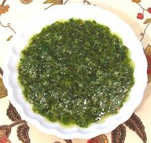

 |
Lemon Mint DressingLebanon | ||||
| Makes: Effort: Sched: DoAhead: |
2/3 cup * 10 min Best |
This dressing is made with various proportions. The formula given here is about normal but may be a little tart for some (if so use less lemon and more oil). Some formulas have no herbs, but as many as 3 cl of Garlic. | |||
|
1/4 1 1/2 1/4 1/3 1/3 |
c cl t c c c |
Lemon Juice Garlic Salt Olive Oil ExtV Parsley Leaves(1) Mint, fresh (2) |
Pomegranite Juice or Verjuice (juice of very unripe grapes) are also sometimes used in place of Lemon Juice. Make - (10 min)
|